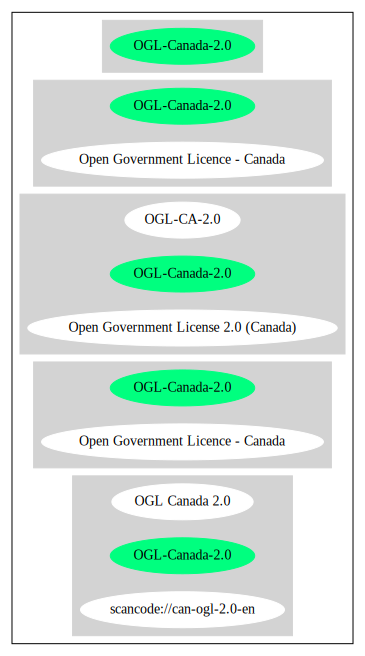

Key |
Value |
|---|---|
Fullname |
Open Government Licence - Canada |
Shortname |
OGL-Canada-2.0 |
Rating |
Unknown, probably Attention or Stop or No-Go |
Other Names:
Open Government License 2.0 (Canada)
SPDX: http://spdx.org/licenses/OGL-Canada-2.0.json
https://open.canada.ca/en/open-government-licence-canada
{
"__impliedNames": [
"OGL-Canada-2.0",
"Open Government Licence - Canada",
"Open Government License 2.0 (Canada)"
],
"__impliedId": "OGL-Canada-2.0",
"facts": {
"Open Knowledge International": {
"is_generic": false,
"status": "active",
"domain_software": false,
"url": "https://open.canada.ca/en/open-government-licence-canada",
"maintainer": "Government of Canada",
"od_conformance": "approved",
"_sourceURL": "https://github.com/okfn/licenses/blob/master/licenses.csv",
"domain_data": true,
"osd_conformance": "not reviewed",
"id": "OGL-Canada-2.0",
"title": "Open Government License 2.0 (Canada)",
"_implications": {
"__impliedNames": [
"OGL-Canada-2.0",
"Open Government License 2.0 (Canada)"
],
"__impliedId": "OGL-Canada-2.0",
"__impliedURLs": [
[
null,
"https://open.canada.ca/en/open-government-licence-canada"
]
]
},
"domain_content": true
},
"SPDX": {
"isSPDXLicenseDeprecated": false,
"spdxFullName": "Open Government Licence - Canada",
"spdxDetailsURL": "http://spdx.org/licenses/OGL-Canada-2.0.json",
"_sourceURL": "https://spdx.org/licenses/OGL-Canada-2.0.html",
"spdxLicIsOSIApproved": false,
"spdxSeeAlso": [
"https://open.canada.ca/en/open-government-licence-canada"
],
"_implications": {
"__impliedNames": [
"OGL-Canada-2.0",
"Open Government Licence - Canada"
],
"__impliedId": "OGL-Canada-2.0",
"__isOsiApproved": false,
"__impliedURLs": [
[
"SPDX",
"http://spdx.org/licenses/OGL-Canada-2.0.json"
],
[
null,
"https://open.canada.ca/en/open-government-licence-canada"
]
]
},
"spdxLicenseId": "OGL-Canada-2.0"
}
},
"__isOsiApproved": false,
"__impliedURLs": [
[
"SPDX",
"http://spdx.org/licenses/OGL-Canada-2.0.json"
],
[
null,
"https://open.canada.ca/en/open-government-licence-canada"
]
]
}